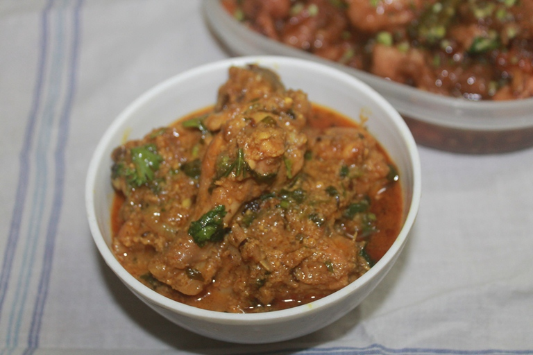

Curd Chicken curry

Spicy, tangy and very flavourful dahi chicken which taste great with roti, rice or pulao. Super delicious and lipsmacking curry.
Dahi chicken is a simple chicken curry, which has yogurt added in. The tangy taste will make this super delicious. It doesn't
have tomatoes added in them, all the tang comes from dahi. The whole curry gets its unique aroma from kasuri methi leaves.
Ingredients
- Oil or Ghee - 5 tblspoon
- Cumin Seeds
- Onion -2 large sliced thinly
- Green Chillies -3 slit
- Ginger Garlic paste - 2 tblspn
- yogurt / Thick Curd / 1 Cup
- Chicken 500 grams
- Salt to taste
- Turmeric Powder -1 tsp
- Cumin Powder -2tsp
- Chilli Powder -2tsp
- Garam masala powder -2tsp
- Mint leaves -1 tblsp
- Coriander leaves a handful chopped finelyli
Instructions
- Heat 2 tblsp oil in a pan, add chicken, along with salt and turmeric powder.
Saute this on high heat till chicken is seared on all sides. Remove to a bowl.
set aside.
- In the same pan, add 3 more tblsp of oil, add cumin and cinnamon.
- Add onions, and saute till golden brown.
- Add green chillies and ginger garlic paste and saute till raw smell leaves.
- Now Addin all masala powder and salt. Mix well.
- Add chicken back in and toss well with masala.
- Add in curd and mix well
- cover and simmer for 20mins till chicken is done.
- Add mint leaves and coriander leaves and mix well and Serve.
back to home